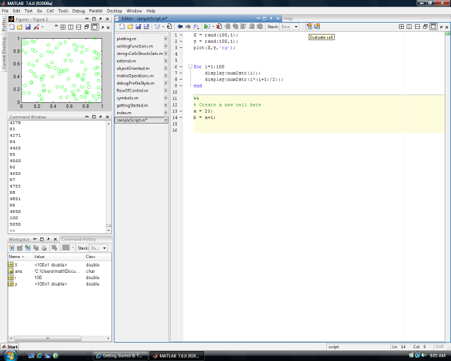

Matlab editor
Matlab is not only a powerful language, but also features an excellent Integrated Development Environment, including a powerful editor, debugger, profiler, compiler, etc. In this chapter, we discuss the editor, which is the recommended way to interact with matlab.
Contents
Editor
As we mentioned, Matlab commands are executed either at the command prompt or by running scripts or functions, which can be created and edited with the built in editor. To launch the editor, if it is not already open, type edit or edit filename. Commands can be entered here and executed as a script. They are saved with a .m extension. To run your script, type in the name at the command prompt, or press F5 or the save and run button at the top of the editor. Your own functions can be written here as well, as discussed here. You can set break points to halt execution at certain lines for debugging, which we discuss here.
Here is an image of the editor in action. Notice we have the open m-files listed in the center column; you can move these to the left right or bottom. We have also docked one of the figures in the top left. By default figures open in their own windows but it can sometimes be useful to work with a figure on the same screen: to do this, use the doc window arrow at the the top left of the figure.

There are many other configuration options and editor tools available; experiment by selecting the many buttons and exploring the drop down menus.
Cells
You can partition your code into editor cells by typing two percent signs, %%, at the beginning of the line. This can help organize your code into logical sections. You can also evaluate cells one at a time by selecting the evaluate cell button at the top of the editor. At any time, you can execute an arbitrary block of code by highlighting it and pressing F9. Cells are also used when publishing your code. This tutorial was written in Matlab and published to html by selecting the publish button at the top of the editor. This can be very useful when you want to share your code and results with others in a professional looking report.
Code folding
Certain constructs like for loops and functions can be folded, hiding all but the top line from view. Select the + or - symbols appearing on the left hand side of the editor, by the line numbers.
Layouts and Other Windows
Matlab gives you a lot of freedom over how you organize the windows in the environment. For instance, you can have have multiple windows take up the same screen area and toggle between them at will, or place windows at the sides where they automatically hide until you select them. Try dragging them around to different places to see the effect. There are more windows than described here available under the Desktop drop down menu.
You can save the current layout, select one of the default ones, tile all the windows, and perform many other related tasks under the Desktop drop down menu. Its worth taking the time to organize your layout effectively before you begin working.
Shortcuts
You can add shortcut buttons to the toolbar, which can be a useful alternative to editing the startup file. right click on Shortcuts then select new shortcut; give it a label (name) and enter the commands you want to run when you click on it.
Web browser
You can read web pages from inside matlab. Just type something like web www.cs.ubc.ca/~murphyk/matlabTutorial/html/index.html. This is particularly useful for matlab-generated web pages, such as this tutorial. You can execute code by highlighting it on the web page and pressing F9. The statements are processed as though they were typed one at a time in the command window.

Workspace
All of the current variables, as well as basic information about them, can be viewed in a convenient graphical window called the workspace (see below). If it is not already visible, you can bring it up by typing workspace at the command prompt or by going to the desktop drop down menu. You can then drag and place it wherever it is convenient. You can set what information you want displayed by right clicking on the header bar (with "Name Value Class Size Bytes" in the picture below). If you double click on a variable it will open it in the variable editor where you can inspect or change its values.

Current Directory
The current directory window, unsurprisingly, displays the files in the current working directory. You can open it via the drop down menu Desktop->Current Directory if it is not already open. From here you can navigate the file system and search for files. Type F5 to force a refresh.